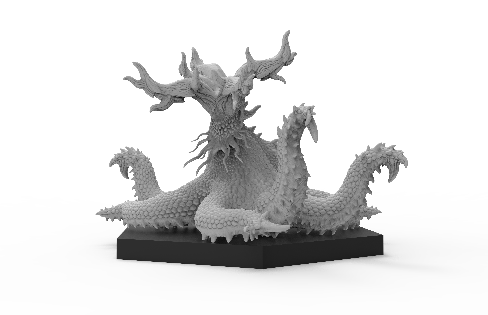
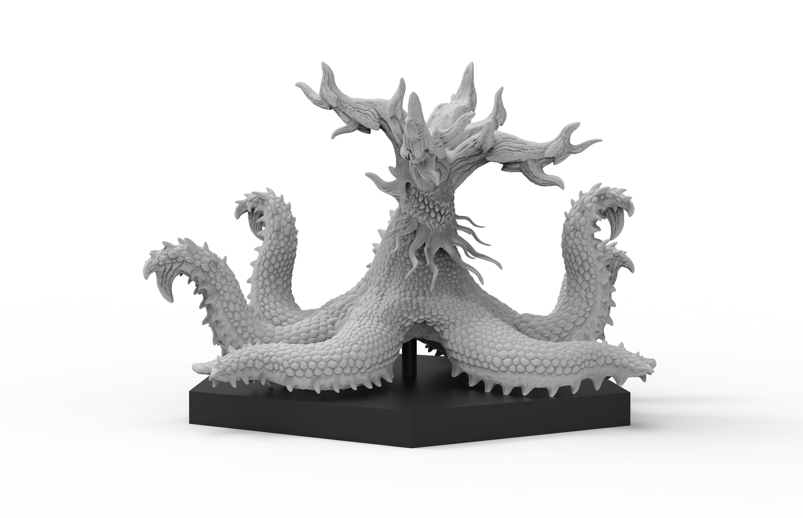
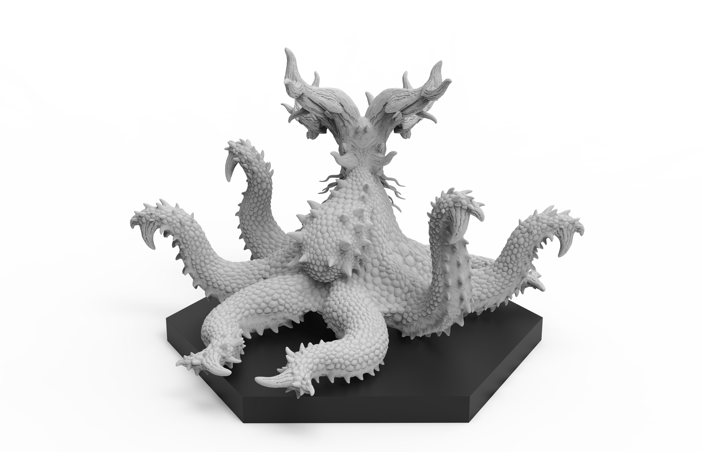
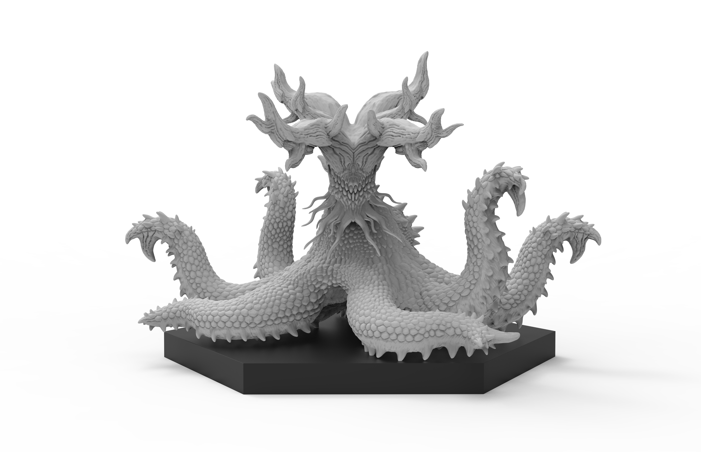
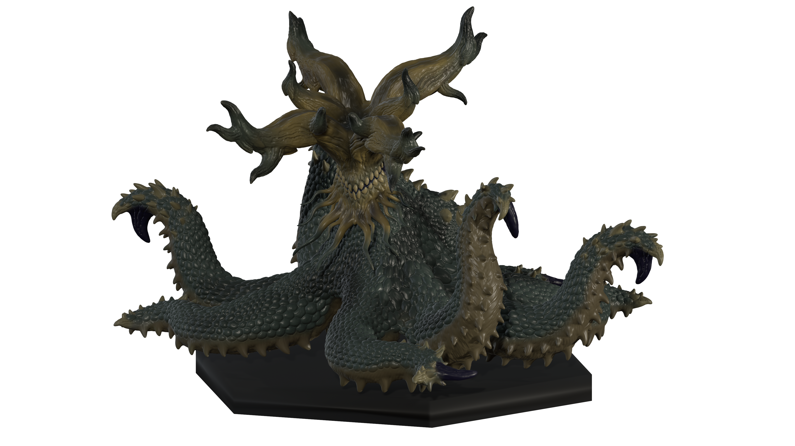

ー 概要 ー
本作品は、２０２６年５月に制作を開始し、同年７月に完成しました。
本来、”水生生物として生きる彼らがもし陸上での活動に適応したらどうなるのか”をコンセプトに製作しました。
蛸（頭足類）特有の触腕の表現には、特に力を入れました。
また、外見は蛸の知能の高さや生物の未知の恐怖を感じられるようなものに仕上げています。
ー 造形 ー




蛸は、私たちの目にはとても奇妙な生き物として映るでしょう。
8本の触腕を持ち、頭と胴体の区別があまりつかない。
極め付けは、触腕は個々に小さい脳を有しており、中心となる脳から指令をもらい、個々が考え動きます。
本作品は、蛸の奇妙さや不気味さのようなものをとても色濃くした造形作品です。
ー 造形からデザインへ ー

従来の蛸は、主に水中で暮らす生き物です。
しかし、そのような水生生物である蛸を本作品では陸上生物として描いています。
水生と陸生では、体の構造は大きく変化します。
蛸本来の触腕の裏面にあった吸盤は、陸上で歩行するための爪のような器官へと姿を変えています。
体表を覆う表皮は、様々な格上の陸上生物や乾燥に耐えうるため、鱗へと進化を遂げています。
このように、外見だけでも本来の蛸とは大きく異なる生物へと変貌を遂げています。
戻る